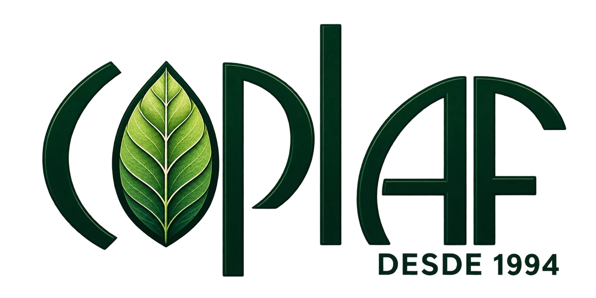
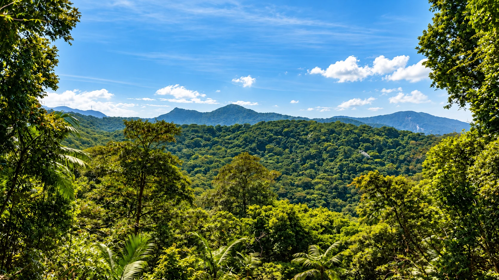
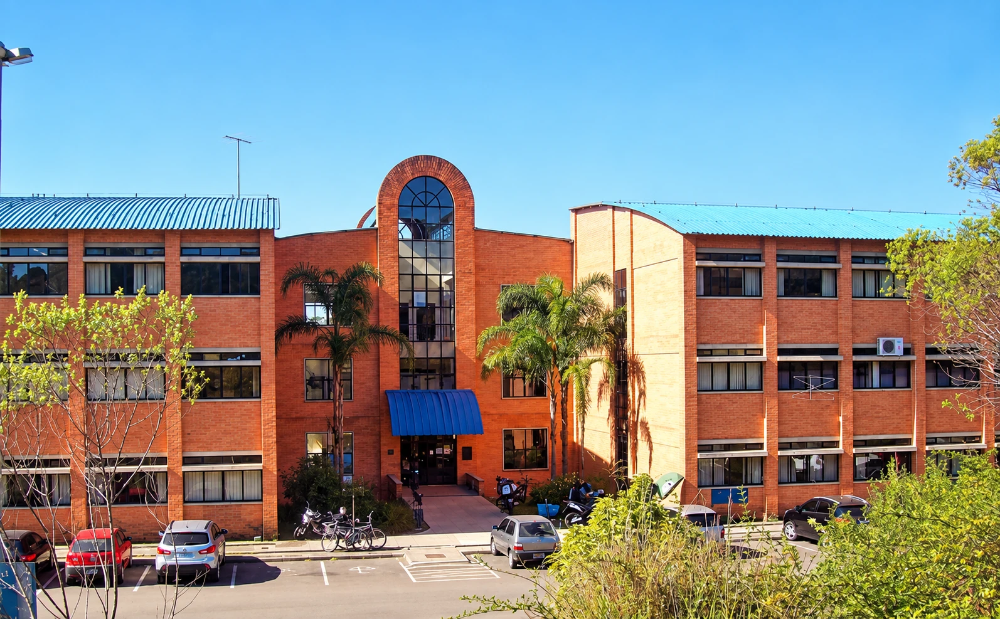
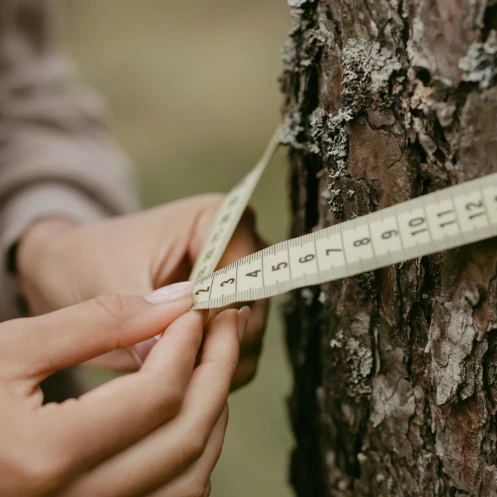

COPLAF · EMPRESA JÚNIOR DA UFPR
Somos COPLAF.
Cultivamos futuros.
Consultoria e planejamento florestais.
Da Engenharia Florestal da UFPR para o seu território.
CONHECIMENTO QUE CRIA RAÍZES

O futuro começa pela raiz.

COPLAF · EMPRESA JÚNIOR DA UFPR
Consultoria e planejamento florestais.
Da Engenharia Florestal da UFPR para o seu território.
EMPRESA JÚNIOR · ENGENHARIA FLORESTAL · UFPR
Gente que aprende.
Conhecimento que transforma.
Consultoria e Planejamento Florestais. Esse é o nosso nome e o que nos move.
Fundada em 1994, a COPLAF é formada por estudantes de Engenharia Florestal da Universidade Federal do Paraná, com orientação de professores. Unimos formação acadêmica e prática para desenvolver projetos florestais e ambientais.
Novas gerações.
Um propósito que permanece.

Estudantes assumem desafios reais, desenvolvendo conhecimento técnico e experiência profissional.
Da identificação de espécies ao planejamento ambiental, cada serviço aproxima a universidade da sociedade.
Conheça nosso campo de atuação. Selecione uma foto para explorar o serviço.
CONHECIMENTO APLICADO / EXPLORE OS SERVIÇOS

DIAGNÓSTICO FLORESTAL
Dados sobre a composição e o potencial da floresta para apoiar decisões.
Vamos falar sobre seu projetoDo Paraná a novos horizontes. Explore os estados e descubra nossas conexões.
estados brasileiros
cidades visitadas
cidades no Paraná
De norte a sul,
um propósito em comum.
De Curitiba a diferentes regiões do Brasil. As linhas ilustram nossas conexões.
A COPLAF NO MOVIMENTO EMPRESA JÚNIOR
Somos a COPLAF. E fazemos parte de uma rede que investe em pessoas, aprendizado e educação empreendedora.
É onde essa conexão ganha vida: estudantes de Engenharia Florestal desenvolvendo projetos para a sociedade.
Acessar canal oficialRole para percorrer a rede ou selecione uma entidade.
Os recursos retornam à formação
de novas lideranças.
Entender o contexto, a área e o que você precisa.
Conhecer o território e reunir as informações.
Construir uma solução para o seu projeto.
Apresentar os resultados e os próximos passos.
Conte sobre seu território.
Vamos descobrir o que podemos construir juntos.